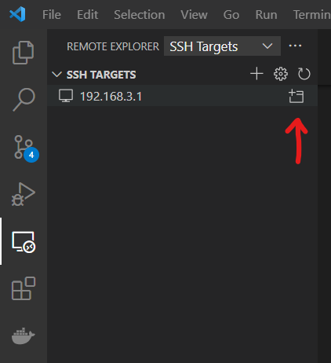
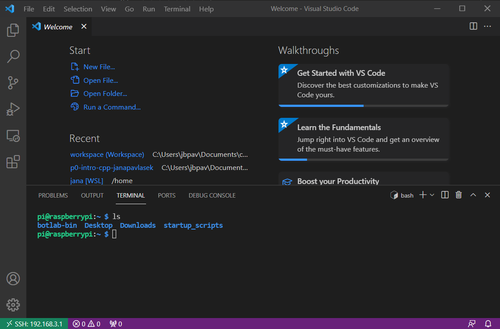

Prerequisites
This tutorial assumes you have followed the instructions for installing Git and VSCode.
1. Add the Remote Development extension
First, we need the VSCode Remote Development extension, which will allow us to connect VSCode to the robot's environment. Open VSCode and click on the "Extensions" icon  in the toolbar on the left. Search for "Remote Development" and select the extension called "Remote Development." Click "Install" to install it.
in the toolbar on the left. Search for "Remote Development" and select the extension called "Remote Development." Click "Install" to install it.
2. Add the Beaglebone as a remote host
Now we will tell VSCode how to connect to the Beaglebone board on the robot. First, power on the robot and connect to the Wifi network OMNI-BBB-XXXX, replacing "XXXX" with the ID of your robot. The ID should be written on a label on the robot. The password for the network is iloverobots. It might take a few seconds for the network to appear. The Beaglebone is on if the green and red battery indicator is lit up and if the blue LEDs by the power button are flashing.
To add the Beaglebone as a remote host in VSCode, click on the "Remote Explorer" in the toolbar on the left. Then, select the + to add a new host:
In the box that appears, type in ssh followed by the robot's address, exactly as below (all robots have the same address and username):
ssh debian@192.168.6.2Press Enter, then select the default configuration file when the option appears:
3. Connect to the Beaglebone
To connect to the Beaglebone, open the "Remote Explorer" tab again, and select the new remote host you just added. Click on the icon to the right of the address to connect to the host in a new window.
If you are already in a new VSCode window with no other files open, you can also right-click on the host address to connect in the current window. You will be asked to select a platform. Select "Linux".
You will be asked for the password to the Beaglebone. This is different from the wifi password. The password is i<3robots!. The first time you connect, it will take a few minutes for VSCode to do some setup on the Beaglebone. You should see the address of the Beaglebone on the bottom left of the VSCode window.
4. Testing the motors
Let's make sure everything is working correctly! In the VSCode window which is connected to the robot, open a terminal by clicking on "Terminal" > "New Terminal." A terminal will open in the Beaglebone.
Now, we can send commands to the motors (tip: set the robot on a box or hold it in your hands so the wheels aren't touching the ground, or it will drive away!). In the terminal, type:
rc_test_motors -m 1 -d 0.5This sends a duty of 0.5 to motor 1. Press Ctrl+C to stop the motor. You can try sending any duty, from -1 to 1, to the motor. You can also try controlling motors 2 and 3 instead.